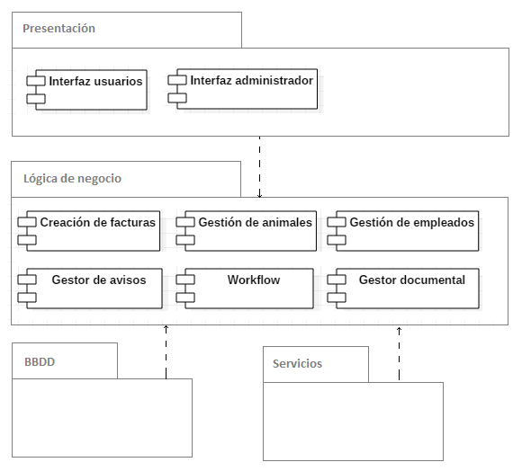
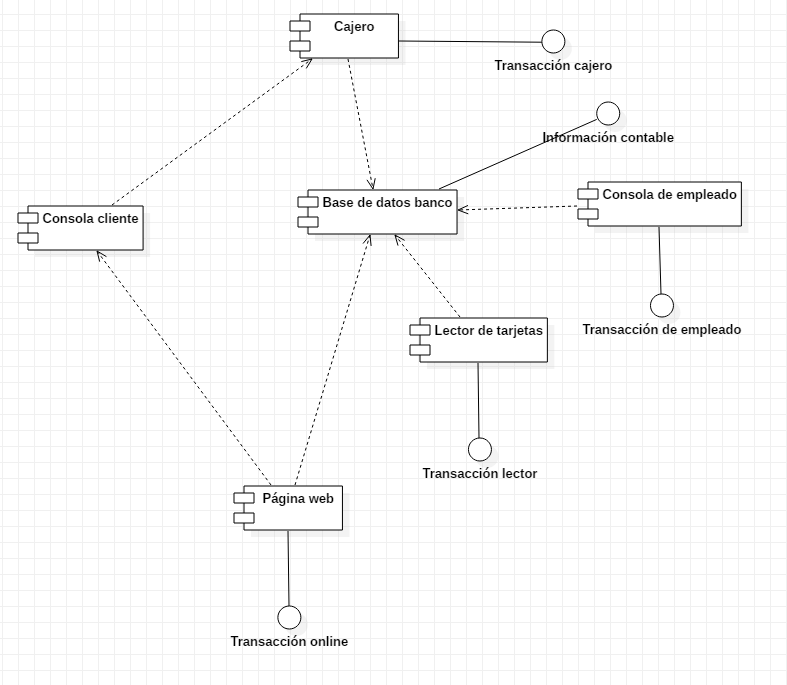

Pasos para Crear un Diagrama de Componentes:
Podemos utilizar un diagrama de componentes cuando se quiere representar un sistema como una colección de componentes e interfaces. Esto ayudará a tener una idea de la futura implementación del sistema. Los siguientes son los pasos que pueden servir de guía al dibujar un diagrama de componentes.
Paso 1: Determina el propósito del diagrama e identifica los artefactos como los archivos, documentos, entre otros, dentro del sistema o aplicación que necesitamos representar en su diagrama.
Paso 2: A medida que descubres las relaciones entre los elementos que identificaste anteriormente, crea un diseño mental del diagrama de componentes.
Paso 3: Al dibujar el diagrama, agrega primero los componentes, agrupándolos dentro de otros componentes como resulte mejor.
Paso 4: El siguiente paso es agregar otros elementos, como interfaces, clases, objetos, dependencias, entre otros, al diagrama de componentes y completarlo.
Paso 5: Puede adjuntar notas en diferentes partes de su diagrama de componentes para aclarar ciertos detalles a otros usuarios.
Diagrama de componentes de una clínica veterinaria

Diagrama de componentes para el funcionamiento de un cajero
